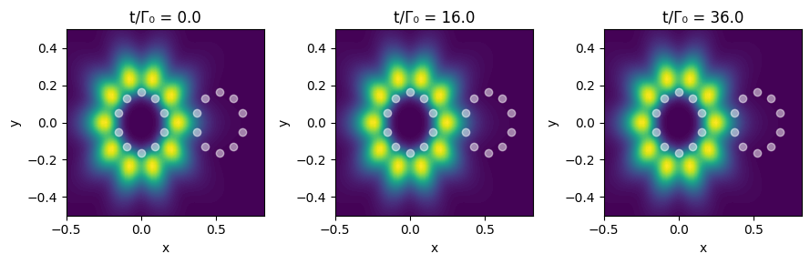
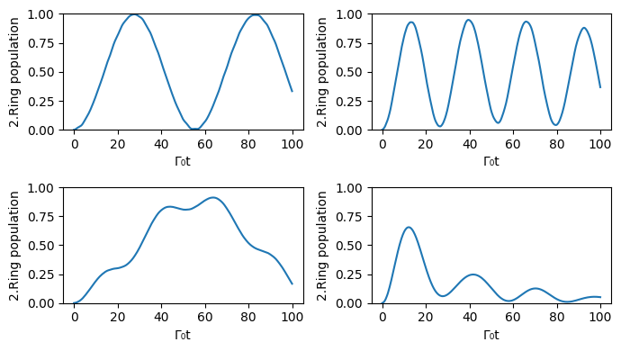

This notebook can be found on github
Excitation transfer between dipole-coupled nanorings
In this example we look at the radiation pattern and transfer of collective states in rings of two-level emitters with transition frequency $\omega_0$ following closely the work of M. Moreno-Cardoner et al, 10.1103/PhysRevA.100.023806.
By considering only a single excitation for the system the Hamiltonian can be cast in non-Hermitian form and the dynamics follow the Schroedinger equation $\dot{|\Psi\rangle} = \frac{1}{i\hbar} H_\mathrm{nh} {|\Psi\rangle}$ with
\[ H_\mathrm{nh} = \sum_{i\neq j} (\Omega_{ij}-\frac{i}{2}\Gamma_{ij}) \sigma^-_i \sigma^+_j\]
For a symmetric ring, where the dipole orientations preserve the rotational symmetry (e.g. if the dipoles are oriented perpendicularly to the plane of the ring, or tangentially to the ring), the collective modes in the single-excitation manifold are perfect spin waves given by $|\Psi_m\rangle = S^+_m |g\rangle$, with
\[S^+_m = \frac{1}{\sqrt{N}} \sum_{j=1}^N e^{i m \phi_j} \sigma_j^+.\]
Here $\phi_j = 2\pi (j-1)/N$ is the angle associated with position $j \ (j=1,...,N)$, and $m = 0,\pm 1,\pm 2,...,\lceil \pm (N-1)/2 \rceil$ corresponds to the angular momentum of the mode.
First we load the necessary libraries.
using QuantumOptics
using PyPlot
using LinearAlgebra
function GreenTensor(r::AbstractVector{<:Number}, k::Real=2π)
n = norm(r)
rn = r ./ n
kr = k * n
exp(im * kr) * (
(1 / kr + im / kr^2 - 1 / kr^3) * Matrix(I, 3, 3) -
(1 / kr + 3im / kr^2 - 3 / kr^3) * (rn * rn')
)
endGreenTensor (generic function with 2 methods)Next we define the parameters, operators, basis and the geometry for two rings with 10 emitters each. Here we choose a tangential polarization for the dipole transitions.
N1 = 10 # number of emitters in first ring
Γ0 = 1.0 # decay rate
d = 0.1 # dipole distance
k0 = 2pi # corresponds to λ=1
# Ring Geometry
ϕ(j) = 2π/N1*(j-1) # Angle separating atoms
Rot(φ) = [cos(φ) -sin(φ) 0;sin(φ) cos(φ) 0; 0 0 1] # Tangential polarization
R = 0.5d/sin((ϕ(2)/2))
pos = [[R*cos(ϕ(j)), R*sin(ϕ(j)), 0.0] for j=1:N1];
dips = [normalize(Rot(pi/2)*pos[i]) for i=1:N1];
# add second ring of same size
for i = 1:N1
push!(pos,pos[i]+[0.0,2R+2d,0.0])
push!(dips,normalize(Rot(-pi/2)*pos[i]))
end
# create N-Level basis for the whole system
N2 = length(pos)
b = NLevelBasis(N2)
sm(i) = transition(b, N2, i)
sp(i) = transition(b, i, N2)
σ = sm.([1:N2;])
σp = sp.([1:N2;])The collective dipole and decay matrix elements are related to the Green's tensor $G(\vec{r}-\vec{r}_i,\omega_0)$ in free space. In this example we start with the most subradiant state of the first ring corresponding to $m = \lceil \pm (N-1)/2 \rceil$ and let the state evolve in time.
We also calculate the output field $E^+(\vec{r}) = \frac{|\vec{\mu}|k_0^2}{\epsilon_0}\sum_i G(\vec{r}-\vec{r}_i,\omega_0)\cdot \vec{\mu}_i\sigma^-_i$ of the system and then the intensity $I(\vec{r}) = \langle E^+ E^- \rangle$ at a point $\vec{r}$, which is generated by all the dipoles.
G(i,j) = transpose(dips[i]) * GreenTensor(pos[i] - pos[j], k0) * dips[j]
function Ω(i,j)
if i==j
return 0.0
else
return -3pi/k0*0.5*real(G(i,j))
end
end
function Γ(i,j)
if i==j
return 1.0
else
return 6pi/k0*0.5*imag(G(i,j))
end
end
# Eigenstates for the 1. ring
H_nh = sum((Ω(i,j)-1im*Γ(i,j)*0.5)*sp(i)*sm(j) for i=1:N1,j=1:N1)
λ = eigenstates(dense(H_nh);warning = false)
psi0 = λ[2][end] # initial state, most subradiant
# Schroedinger time evolution for both rings
tspan = [0.0:0.2:100;]
Heff = sum((Ω(i,j)-1im*Γ(i,j)*0.5)*sp(i)*sm(j) for i=1:N2,j=1:N2)
tout,psit = timeevolution.schroedinger(tspan,psi0,H_nh)
function Ep(r,N) # electric field
out = [0*transition(NLevelBasis(N), N, N) for i=1:3]
for i=1:N
G_ = GreenTensor(r - pos[i], k0)
Gpi = (G_ * dips[i])
@inbounds for j=1:3
out[j].data .+= sm(i).data .* Gpi[j]
end
end
out
end
function Intensity(r,N)
E = Ep(r,N)
sum(dagger(e)*e for e=E)
end
I_exp(r, ψ) = real(expect(Intensity(r,N2), ψ))I_exp (generic function with 1 method)Finally a grid in real space for the radiation field is defined and the instances of time are chosen such that the excitation is either almost completely in ring one or two.
# Define grid
xmin = -0.75+R ; xmax = 0.75-R;
x = collect(range(-0.5, stop=0.5, length=61))
y = collect(range(-0.5, stop=2R+0.5, length=61))
z = 1.5R
grid = [[x1, y1, z1] for x1=x, y1=y, z1=z];
figure(figsize=(9, 3))
kspan = [1,81,181]
for k = 1:3
t = kspan[k];t2 = tout[t]
I_profile = [I_exp(gr, psit[t]) for gr=grid];
subplot(1,3,k)
title("t/Γ₀ = $t2")
contourf(y, x, I_profile, 100,cmap="viridis")
for i = 1:N2
plot(pos[i][2],pos[i][1],"wo",markersize=6,alpha=0.5)
end
xlabel("x")
ylabel("y")
tight_layout()
end

To look more closely at the transport behaviour of the two rings we define a projector which counts only excitations in the second ring and look at its time evolution for the 5 most subradiant states starting in the first ring.
function projector(psi)
acc = 0.0
for i = N1+1:N2
acc += expect(sp(i)*sm(i),psi)
end
return acc
end
figure(figsize=(7, 4))
for i = 1:4
psi0 = λ[2][end+1-i]
tout,psit = timeevolution.schroedinger(tspan,psi0,Heff)
subplot(2,2,i)
plot(tout,projector.(psit))
xlabel("Γ₀t")
ylabel("2.Ring population")
tight_layout()
ylim(0,1)
end
/root/.local/lib/python3.10/site-packages/matplotlib/cbook.py:1699: ComplexWarning: Casting complex values to real discards the imaginary part
return math.isfinite(val)
/root/.local/lib/python3.10/site-packages/matplotlib/cbook.py:1345: ComplexWarning: Casting complex values to real discards the imaginary part
return np.asarray(x, float)